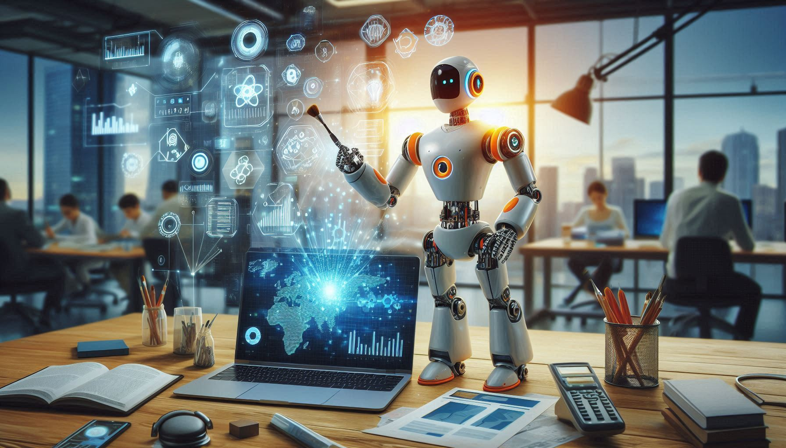

AI : A Buzzword
"AI is cool, AI is creative.” “Ai is genius, AI is creator.” “Ai is our final Invention, Ai is a moral obligation.” “Ai is the violence, Ai is the war”. AI is like a magic trick, constantly surprising us with its wonders. The AI boom will boost the game and AI bubble is about to blast. AI will enhance human potential and create new opportunities for growth and innovation. “AI is a future, It will kill us all.”
What the heck is AI?
Artificial Intelligence (AI): The Matter of Death in the Digital Age. But what is it? It
sound like a weird question, but it's one that's never been more intriguing. Here's the short
answer: "AI is like having a supercharged digital brain that learns and thinks on its own. It’s
the tech behind everything from smart assistants to self-driving cars, making our lives easier
and more connected by handling tasks and solving problems with impressive speed and smarts."
Everyone wants AI, everyone is interested in AI, everyone likes AI, everyone busys things with
AI-AI, AI, AI.
Application of artificial intelligence (AI)
There are many different application of AI, including:
NLP allows computers to understand and generate human language. This technology is used in a variety if application, such as machine translation, spam filtering, and sentiment analysis.
Computer vision allows computers to identify and interpret visual content. This technology is used in a variety of applications, such as self-driving cars (e.g., Tesla, Ford, Cruise, and so on), facial recognition, and object detection.
Ml allows to learn from data and improve their performance over time. This technology is used in a variety of applications, such as predictive analytic, fraud detection and recommendation system.
Robotics is the branch of Ai that deals with the design, construction, and operation of robots. Robots are used in a variety of application, such as manufacturing, health care, and space expoloration.
Generative AI: The Secret weapon of Data Science
Let's talk about how generative Ai is impacting the ever-booming data science industry!

Generative AI, with its ability to create new content, is reshaping the data science landscape. It's
not jist about analyzing data anymore; it's about generating insights, creating new datasets, even
automating parts of the data science pipeline.
Synthetic data generation: Generative AI can crate vast amount of synthetic data,
which is invaluable for training models when real-word data is scare sensitive or imbalanced.
Data Augmentation:
By generating varation of existing data, generative AI can improve model robustness and performance,
especially in areas like image and natural language processing.
Automated feature engineering:
Generative AI can suggest relevant features, create new ones, and optimize feature sets, saving data
scientists significant time and effort.
Data Visualization: By generating different visualizations, generative AI can help
to uncover hidden patterns and insights more quickly.
Model Generation: Generative AI can assist in creating initial model artitectures,
suggesting hyperparameters and even automating parts of model training process.
Model explaination:
By generating human-readable explanations, generative AiI can help data scientists understand model
decisions and build trust.
Can Artificial Intelligence Replace Human Intelligence?
While AI has enormous potential, it's important to remember that it's not a silver bullet. AI systems
require human input and oversight to perform appropriately and make decisions in ambiguous
situations.
Ultimately, AI is not a replacement for human intelligence, it's a tool that can help us achieve our
goals, but we need to ensure that we use it responsibly and ethically.
 Furthermore, humans bring a wide range of experiences, creativity, and intuition to the
decision-making process that AI cannot replicate. While AI can process vast amounts of data and
identify patterns that humans may miss, it cannot replace the value of human intuition and
creativity in decision-making.
Furthermore, humans bring a wide range of experiences, creativity, and intuition to the
decision-making process that AI cannot replicate. While AI can process vast amounts of data and
identify patterns that humans may miss, it cannot replace the value of human intuition and
creativity in decision-making.
It's important to understand that AI isn't a replacement for human intelligence. It's an extension
of it. It can help us to make better decisions and to be more productive, but it can't replace the
value of human intuition and creativity
Final Thoughts
Above all else, AI is and idea-an ideal-shaped by worldviews and sci-fi tropes as much as by math and computer science. Figuring out what we are talking about when we talk about AI will clarify many things. We won't agree on them, but common ground on what AI would be a great place to start talking about AI should be.